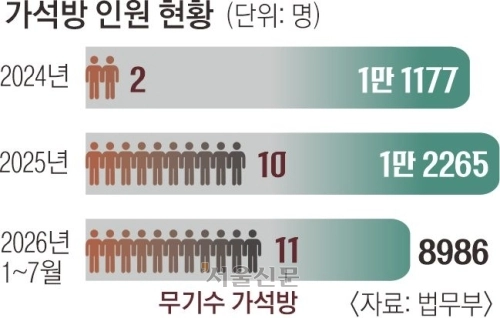

범죄자들한테 한없이 따스한 나라
무기징역수들 죄 지은거 생각하면 이정도거 딱같은데

범죄자들한테 한없이 따스한 나라
무기징역수들 죄 지은거 생각하면 이정도거 딱같은데
미국도 그거 돈 많이 든다고 폐쇄했다
그거 만들 돈으로 그냥 육지에 만들어서 지역에 돈 뿌리는게 더 싸다
나온 애들이 고위 관리직들 담궈야 못 나오게 될듯ㅎㅎ
과밀수용이라고 빡대가리야
쳐늘려서 못 나오게 해야지 10창아 과밀수용 언제까지 우려먹을건데 지방에 안 쓰는 건물들 얼마나 많은데 거따만 쳐박아놔도 됨 범죄자 새끼들 걍 교화도 필요 없어 안에서 살자하게 만들어야 됨
그럼 니집에 가둬
교도소를 늘려도 교도소직원도 결국 감옥생활이라더라 마냥 늘릴수도없고 참
그래도 늘려서 1인당 맡는 수를 줄여야함
범죄자한테 친화적인 나라네
경찰 검찰 판사를 언제부터 그렇게 신뢰하셨을까?
살면서 단한번도 욕 안했지? 킹관된 진술로 성범죄 유죄 단 한번도 의심 안했겠지?
한번이라도 했으면 지금이라도 벽에다 시원하게 박치기 한번 하고 정신차려라
범죄자세요? 왜 긁히셨지
범죄자들 강제 노동에 못쓰나 쩝
저것들은 인권이란걸 절대 주면 안되는데
인권사랑개 ㄷㄷ
어차피무기징역이면그냥 갈아서 바다에뿌리지 뭐하러데꼬잇냐
10년 전에 임도빈 당시 병장(임 병장)이 총기난사 저질렀던 사건이 최근 사형 판결이네. 최근 10년 간 뉴스로 본 흉악범들보다 임 병장이 더 질 나쁜 놈이라는 건가. 법 정서는 뭔가 이해하기가 어려움.
사람5명죽고 7명부상 그리고 현역군인에 총기탈취 그로인한 각종피해..질나쁜놈맞음 살인잔인하게했다고 다질나쁜것만은아니라고생각함
요즘 현실이 형량의 절반만 살면 가석방 심사 청구가 가능함. 이게 유인정책으로 그렇게 하니깐 분란 없이 고분고분한 죄수들이 많아졌음. 근데 제삼자 입장에서 죄수가 죽건 살 건 풀려나건 남의 일이라 생각하면 상관없는데, 본인이 피해자고 저 새끼는 만기 출소해야 한다고 생각한다면 국민신문고 통해서 교정본부에 가석방 불허 청원을 하면 됨. 내용은 ai로 검색해서 알려달래서 민원 넣으면 됨. 그럼 범죄자 새끼는 이유는 모르고 얌전히 수용생활했는데, 가석방 불허가 나오는 빡침을 받게 됨. 그리고 이런 민원이 있었다는 것은 수용자가 절대 알 수 없음.
가석방 없는 무기징역이 필요한 이유라니깐?
판사들이 백날 판결문에 가석방 하면 안돼요 적어도
아무 의미없음
걍 빵안에서 지들끼리 죽이게 냅두지
소멸중인 지방에 초대형 감옥 하나 만들고
ai등을 이용해서 필요인원과 비용 줄여서 사회랑 영구히 격리시켜야지
이런데 들어가는 세금은 안아깝다
서해 남해 연안에 알카트라즈 몇개만들자